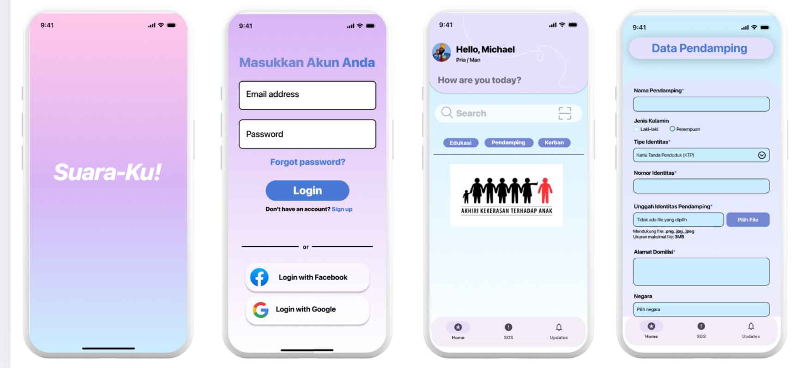

Halaman ini menampilkan berbagai prototype aplikasi yang telah dikembangkan sebagai bagian dari proyek pengembangan solusi digital. Setiap prototype dirancang dengan pendekatan user-centered, mengutamakan antarmuka yang intuitif, fungsional, dan responsif terhadap kebutuhan pengguna. Salah satu contoh yang ditampilkan adalah Suara-Ku, sebuah aplikasi advokasi untuk remaja, serta beberapa prototype lainnya yang mencerminkan kolaborasi tim dalam menciptakan inovasi berbasis teknologi. Beberapa prototype yang ditampilkan antara lain:
1. Desain Prototype Aplikasi Suara-Ku!
Proyek ini melibatkan pengembangan prototype aplikasi Suara-Ku!, sebuah platform seluler yang membantu mendidik, mendukung dan mengadvokasi korban kekerasan, khususnya pada remaja. Pada aplikasi ini dikembang oleh tim dengan faktor yang kuat pada desain antarmuka pengguna (UI) yang intuitif dan fungsional. Aplikasi ini bertujuan untuk menciptakan solusi digital yang mendukung edukasi dan pemberdayaan komunitas, sekaligus memperhatikan kemampuan kerja sama tim dalam pengembangan produk tertentu. Berikut beberapa fitur utama yang ditampilkan dalam prototype:
- Halaman Splash Screen
- Halaman Login
- Dashboard Utama
- Halaman Form Data Pendamping
Aplikasi ini dikembang oleh tim dengan pembagian tugas yang terstruk, dimana setiap anggota memiliki peran yang spesifik. Proses pengembangannya meliputi :
- Desain UI/UX yang dimana merancang layout yang user-friendly dan estetis untuk memberikan pengalaman pengguna yang optimal.
- Impemenatasi Fitur yang dimana Mengintegrasi elemen fungsional, seperti autentikasi pengguna dab form pengisian data.
- Pengujian Prototype yang dimana Memastikan fitur berjalan dengan baik sesuai kebutuhan pengguna target.
Sebagai bagian dari tim ini, saya turut berkontribusi dalam mengembangkan aplikasi yang efektif dan bermakna untuk mendukung solusi digital
2. Desain Prototype Website Master Marine Interview!

Proyek ini melibatkan pengembangan prototype aplikasi dengan fokus pada desain antarmuka pengguna (UI) yang modern dan fungsional, menggunakan skema warna biru yang konsisten. Saya pribadi mengembangkan prototype ini untuk menunjukkan alur pengguna yang intuitif mulai dari proses login hingga eksplorasi fitur dan pengisian data. Tujuannya adalah menciptakan solusi digital yang menarik secara visual dan mudah digunakan. Berikut beberapa fitur utama yang ditampilkan dalam prototype ini:
- Halaman Login
- Halaman Beranda (Home)
- Halaman "About Me"
- Halaman Pembaruan (Update)
- Halaman Tambah Kursus (Add Courses)
- Halaman Modul Formulir (Form Module)
- Halaman Materi Direct Interview
- Halaman Materi Computer Based Training
- Halaman Materi Marlins Test Training
Proses pengembangannya meliputi:
- Desain UI/UX: Saya merancang layout yang user-friendly dan estetis dengan fokus pada skema warna biru dan elemen desain yang bersih untuk memberikan pengalaman pengguna yang optimal.
- Implementasi Fitur: Saya mengintegrasikan elemen fungsional, seperti autentikasi pengguna dan form pengisian data.
- Pengujian Prototype: Saya memastikan fitur berjalan dengan baik sesuai kebutuhan pengguna target.
Melalui proyek ini, saya berkesempatan untuk mengembangkan aplikasi yang efektif dan bermakna secara mandiri, mendukung solusi digital dari awal hingga akhir.
Back to Portfolio